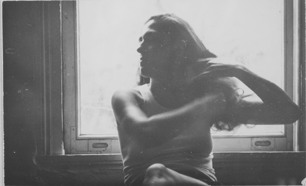
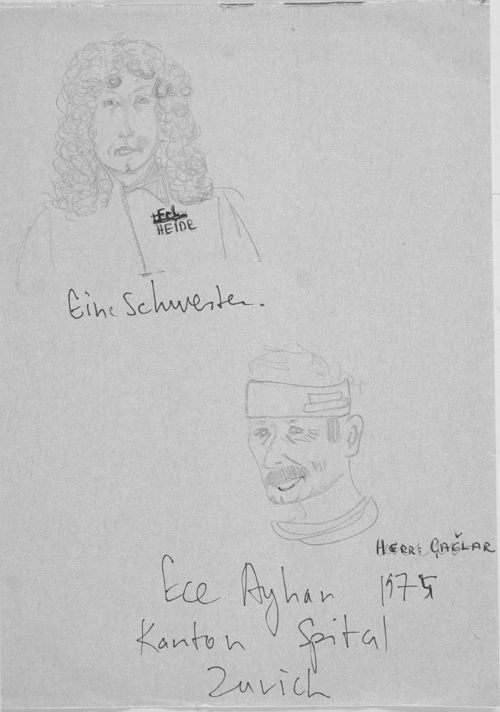
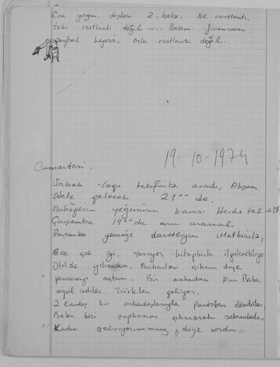
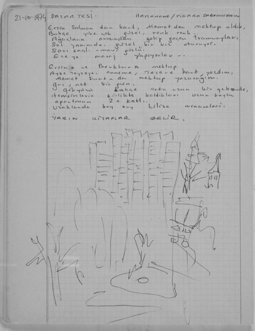

Ali gitti, pencereyi açtım, yola baktım. Yağmur. Geçen, hızla geçen arabalar. Oda. Duman –darma. Mathias’ı aradım, meşgul, odayı düzenledim.
Mathias’la görüştüm. 21.00-21.30 arası beni alacak (Tezer Özlü’nün arkadaşı.)
Not alırken geldi.
İspanyol şarabı içmeye, gölün geçmediğim kıyısına gittik, dar, filmlik sokaklar.
Meyhanede, neden sonra, birbirimizi yedi yıl evvel İstanbul’dan tanıdığımızı, iki gün üst üste adaya gittiğimizi, hatırladık. Hatta fotoğrafı bile var bende. Çengelköy’de... Sandıkta.
İyi, yumuşak bir akşam.
Yarın cumartesi, ona gideceğim, beni 17.30’da alacak.
Gece:
Canlara mektuba devam etmeli!
SAMSUN sigarası içiyorum.
BİZİM GİZLİ İŞSİZLERLE beraberim.
Cumartesi
Cevat Çapan’ın kayınbiraderinin arkadaşı TUNÇ geldi. JÖNTÜRK TEVFİK BEY.
SONRA NAMLI KABADAYI İDRİS.
Karnına bıçak atmışlar.
1962’de hapiste yatmış. Aralıklı olarak 9 yılı hapislerde geçmiş.
Alkol çok alıyor.
İyi huylu bir haşarı adam. Kendini yemiş.
Mathias geldi.
Evi güzel – küçük bir Boğaziçi. Malum wurst yedik, şarapladık. Almanca içinde sık sık gülüp neşelendiğim sözcükler Türkçede beni sıkıntıdan patlatabilir.
Pazar. Gece
Akşam dışardayken üç telefon gelmiş. Osman konuşmuş. Sabah bana seslendi. “Birtakım telefonlar oldu, gel, konuşalım...” diye
Kahvaltı. Üç telefon. (Can, Onat) Göktürk (Akşit). Seran.
Akşit Göktürk gelecek Pzt. Salı, Ece’ye.
Gönenç telefon etti.
Tunç “ “.
Sümer “ “. Otele gelecek.
Telefon bekle bekle. Saat: 21.00.
Hava yüzü göremedim. Erkenden uyumalı, daha az yaşamış olsam, böyle bir gün kalbimi ağrıtırdı. Katıyım, yani normal.
(Defterin bir yaprağı yırtılmış.)
Ece’ye uğradım. Gazi ile konuştuk. “Hastamız iyi!” der.
Ece’yi bıyıklarından öpüp otele geldim.
Sümer’le evine gidiş.
TARHANA ÇORBASI-PİZZA.
Mektup yazdım. Taksiyle dönüş.
Gece okudum. Saat: 03.00. Uyumalı.

Sevgi Özdamar otel odasında, Zürih 1974.
Salı, 15 Ekim 1974
Mehmet uyandırdı. Sabah, 07.30. Kahvaltı. Mehmet’e gözlük almaya şehre – KOCHOPTİK’E gittik.
Babası ne Laz mütahit firma ha!
2. bir doktora gitmemek için gözlükçüye neler sordurdu bana. Sol elini pantolon cebine iyice sokup bir zarf çıkardı, buruş buruş. İçinde MARKLAR, DOLARLAR.
Mehmet’e veda.
– Ece’yle 1 saat gevezelik.
– Şehre indim-
– Otele yorgun döndüm.
Şehirde güzel bir parkta sigara içtim. Haritaya bakmalı. İncelikler çoğalıyor.
2 İtalyan, hortumu pipileri gibi kullanıyorlardı yolda. Dün gelen boyalı kokana bayan para vermemek için yürüyüş yapıyor. Her gördüğü ufak eşyayı önce dolar, sonra İsrail parası içinde hesaplıyor, bir No – Nein – Nein sesleri çıkarıyordu.
... Sinema Tek’ten telefon etti, Onat’la konuştuk.
Semra eve dönmüş.
Babaannem Çengelköy’de kalıyormuş.
Ecevit’in teklifiyle devlet Ece’nin bundan sonraki bakımını üzerine almış.
Ece üç ay daha kalabilirmiş. Gazi ile konuşmalı bu meseleyi.
Mathias gelecek.
Ece’ye üç mektup var.
Annesi.
Mehmet.
Önay (Sözer).
Ece’ye Mathias’la gittik. Hastahaneden sonra Bodega’ya gittik. Oturalı 5 dakikayı geçmemişti. Az ilerde arkası bana dönük biri KİTLE gazetesi okuyordu.
Heyecanlandım.
Omuzunu elledim, yüzünü kaldırdı. Uzun bıyıklı bir İsviçreli. Ama ne sevimli. Türkiye’den gelirken almış Kitle’leri oturup okudum.
Masamıza geldi. Üniversitede matematik asistanı Joos. Şarap ısmarladı.
Mathias, iki kız, Joos, ben ordan ara sokaklara dalıp tavuk ciğeri yenen ucuz bir lokale gittik.
Sonra Mathias, iki kız gittiler. Joos motosikletini aldı. Yolda onu bir duvar dibine kilitledi. Otele kadar yürüdük. Gece görüntü ıssız, sessiz, yeşillikler içinde enfes tabii.
Gece çok güzeldi.
Çarşamba, 16 Ekim 1974
Sabah Akşit Göktürk geldi. Ne sevimli, sakin, bilgili, genç adam. Ece iyi.
Otele döndüm, ağda yaptım, uyumaya çalıştım. Mathias aradı. Akşam 20.00’de Bodega’ya gelemeyecekmiş. Ben giderim. Joos gelecek ya.
Tunç (Okan) aradı. Ece’nin diğer küçük tümöründen söz etti. Yarın 11.00’de Ece’ye gelecek.
Bodega’ya gittim. Joos geldi. Beni tanımadı. Görünce şaştı. Çay içiyordum. Şarap içtik, sokaklarda dolaştık. İtalyan restorana beni davet etti, yemek yedik. Otele dek yürüdük. Motorla 15 km, evine varmıştır şimdi.
İch habe ihn sehr gern. Sogar wenn er eine Möglichkeit findet in der Türkei an der Universitet zu arbeiten er kamm nach İstanbul. Es wäre schön.
İch will mit ihm zusammen sein. Morgen gegen 10 Uhr. Wird er mit mich telefonieren. İch warte auf.
Otelde içki içen İspanyol işçilerine rastladım. Açık saçık konuşmaya dalıyorlar hemen.
Gazeteler var, okumalı.
Ein schönes Abend-
Perşembe, 17 Ekim 1974
Aydın Emeç ve karısı geldiler.
Sabah 10.00’da Joos aradı.
12-12.30 arası Central’de buluşacağız.
Ece’ye gittim. Bugün posta yok. Ece yorgun ve sinirliydi. Dün gece bir cadı karı ona hemşirelik etmiş, zorlamış anlaşılan.
Onu uykuya bıraktık.
Şehre indik, Aydın Emeç ve karısıyla. Karısı üzüldü. Benim ilk ameliyat günü sonrası mide bulantım gibi...
Central’de. Joos geldi
Aşağı yukarı üç saat Ece’nin kitabını birlikte okuduk. Kitabı eve aldı. Bu akşam okuyacak. Bir komünist kitabevine gittik, bir tiyatro gösterdi bana.
Ali, Joos’la arkadaşlığımdan memnun.
Ece’yle bir ev tutacağız.
Ece’ye gittim. 3-4 saat oturdum. Sıkılıyor. Yazı yazmak, okumak istiyor. Ece’yi ömrüm boyu unutmayacağım. Bugünlerin kıymetini bilmeliyim. Böyle zengin, akıllı, bilgili, dürüst, zeki ŞAİR bir adam. Ben onun yanındayım. Bu ne zengin bir dünya. Onu ihmal etmemeliyim. Uzun süre yanında kalmalıyım. Canımın içi ECE AYHAN. NÂZIM HİKMET’in sentaksının Osmanlı kültüründe kaldığını CUMHURİYET ŞİİRİ SENTAKSININ henüz bulunamadığından söz etti.
Meyva yedi. Yemek yiyemiyor. Yiyip güçlenmesi gerekir oysa.
Akşam 21.00’de otele döndüm. Yarın Ece’ye pirinç götüreyim.
Yemekte, telefonlar arka arkaya geldi...
Sümer’e, Mathias’a, Ali’ye telefon ettim. Alişim bana kitap ve plak gönderecek, posta ile. Joos 5-6 yere telefon etmiş, Ece’ye pansiyon aramış, ayrıntılı bilgi verdi.
Joos Joos Joos

Ece ve hemşire.
Gece 12.30’da İstanbul telefonunu iptal için santrale indim. Bir İspanyol, iyi dil bilmiyor. Ama Franco’ya karşıydı. Lorca’yı biliyordu. O halde konuştuk sayılır.
MEHMET UZUNAL
MÜHÜRDAR, DR. ŞAKİR PAŞA SOK., N0. 7, HUZUR APT. D. 12
MODA - İSTANBUL
JOOS HEINTZ
MARGRITSTR 3
8304 Wallisellen
Tel: 8300092 İSVİÇRE
HOTEL BASILEA 474250 / 315 Herrn. EMEÇ
C. ENARO., F. FUENTES Tel: 343171
WERMUTLICH ENDE OKT.
Münstergasse 20, 3. Stock
Gece 01.00. Yan odada birisi müthiş horluyor.
Otele çıkan yokuş boyunca dünyanın en güzel sonbaharını, renklerini gördüm.
Ağaçların altında dönerek sarılıktan altınlaşan sevinci gördüm.
ANONSE AUFGEBEN! (Ev arama ilanı)
FÜR ZWEİ MONATE SUCHE EİNE MÖBİLİERTE ZWEİ ZİMMER WOHNUNG. UM ETH HERUM İN DER UMGEBUNG VON DER HOCHSCHULE
PREİS BİS 800. MİT TELEPHON.
VERBİNDUNGS NUMMER İST. 326580. Frl. SEVGİ
Frau 269 30
Kontonspital 20 Frank mit Frühstück.
Adress:
Tram: No.7
Ottickerstrasse, 4 Häuser abwärts neben Hotel Reks.
– Stamfenbach str. Bäckenhof (Tramhaltestelle)
– Wochnungvermitlungs Büro.
Cuma, 18 Ekim1974
Sabah. Joos telefon etti. Türkçe konuştuk. “Başım dönüyor” dedi, telefonun sonunda küçük bir tuzak kurdum ona. “Gözlerinden öperim”, “Ben de senin ellerinden öperim”, “Ben senin yanaklarından öperim”, “Eee, bana bir yer bırakmadın!”, “Ben de seni ağzından öperim”. Bu şakaya gelişi zekilik elbet.
Ece’yle birkaç saat oturduk. Ev aramaya gittim, çok yoruldum.
Akşam konser.
Bethooven, Mozart, Schumann.
Yaşargil ve karısı da ordaydı. Dört kez karşılaştık.
Ece yorgun. Dişleri ikinci bela. Ne rastlantı! Tabii rastlantı değil, bakım, finansman... Sınıfsal hepsi, asla rastlantı değil...

Cumartesi, 19 Ekim 1974
Sabah Joos telefonla aradı. Akşam otele gelecek, 21.00’de.
Anhägger’in (Robert) yeğeninin karısı Heidi telefon etti. Çarşamba 19.00’da onu aramalı. Perşembe yemeğe davetliyim Mathias’la.
Ece çok iyi. Yazıyor, kitaplarla ilgilenebiliyor.
Otelde yıkandım. Buharlar çıksın diye pencereyi açtım. Bir arabadan ana, baba, oğul indiler. Türkler geliyor. İki kardeş arkadaşlarıyla Paris’ten döndüler. Baba bizi şapkasını çıkararak selamladı. Kadın “Çalışıyor musunuz?” diye sordu.
Ece’yle İsviçre üzerine laflıyoruz. Dedim ki: “İsviçre’de hiçbir ihtilalci dâhi çıkmadı ama bir gün İsviçre’yi solculara, ihtilalcilere yataklık suçundan yargılayacaklar.”
Dün akşam konserden dönerken nefis ışıklı bir bina gördüm. “Aaa, bu ne?” dedim, “Müze, opera binası falan mı?” Banka imiş.
Semra’ya mektup yazacağım.
Yaşargil geldi. James Joyce’un mezarına gideriz Ece’yle. Burda tepelerdeymiş.
Ece, Spiegel’i okudu bitirdi bile. 20.30’da eve – otele geldim. Anahtarımı isterken Joos uğradı. Uzun bir parkta yürüyüş. Uzun ağaçlar, iki tarafta nehir, işçi mahallelerine doğru yürüdük. Bir yere daldık. Alkolik işçiler. Kanları emilmiş İspanyol işçileri, İtalyanlar. İsviçreli işçiler bana bakıyorlar, aralarında konuştular ama anlamadım.
Ordan ikinci bir yere daldık. Lumpen proleterler ve proleterler. Yaşlı, genç, şişman, ince, uzun kısa, erkeklerin elleri kadınların kalçasında. Uzun saçlı yarı politik lumpenler. Yürüdük, köprü-köprü yanyana iki köprü altından akan sular iki ayrı nehirmiş.
Yokuşu tırmandık. Otel. İspanyol arkadaş oturuyor. Büroda gece 24.00’ten 07.00’e dek onunla lafladık. Restaurantta çalışanlar Frankocu imişler. Bana aşk yapmaktan anlatıyorlar.
Condrado –İspanyol– solcu işçi. Bize gizli ? litrelik şarap açtı. Parasız. Joos’la uzun sohbetledik. Babası İspanyol İçsavaşı’nı görmüş. Ben “Baban da şahsen katılmış mı?” dedim. Hayır. “Araba satmak için ordaymış.”
Joos, ezanın Arapça okunup Kuran’ın Türkçeye çevrilmesinin hâlâ gerçekleştirilememesini blödsinn[10] olarak yorumladı.
İch fühle mich müde. So irgendwie bin İch schlafen gekkommen. Er auch.
İçiçe iki kaşık gibi.
Tagsüber. Es ist 9 Uhr. 10 vor 10, Eine feine nacht hanheett.
20 Ekim 1974
Arif Çağlar telefon etti. Kızıyla geldi. Regina.
Ece’ye çıktık. Konuştular. Onlara gittik. Kardeşi bereyle tıpkı Castro. Türkiye yüzme şampiyonu. 10 aydır burada YÜZ ME ! öğreniyor.
Alman Dili için de fiiller arasında.
Zengin çocukları oldukları belli.
Sonra KURT. Bütün gün onunla lafladık.
PETER STEIN
ALLEIN TANNER
BERT. BRECHT
IN DER MITTE DER WELT filmi üzerine. Beş aşağı beş yukarı aynı, dass selbe meinunge haben wir.
Arif Berlin’e yolcu.
4 nolu tramvay. Richtung Tiefbrunnen. Am 4 Haltestelle steig auf. Burası ABONOZ SOKAĞI imiş anlaşılan. Bir herife yol sordum “Senle bir anlaşalım” diye karşıladı ama yolu da gösterdi.
Börek ve bol bol çay.
Kız Viyana’da okurken DİANA-UMAY’ı Ali’yi, Hüseyin’i (Tüzün) tanımış. Önay’ın (Sözer) karısı Gülbin’i... Çok yüksek sesli, günlük konuşması.
Tramvaya atladım. Yorgunum. Ece’ye geldim. Ece’ye sabah ışığının parçalanışını anlattım. /Sarı/Beyaz/Kırmızı/Siyah/
Motosiklet beyaz ışıktan geçip gitti.
Bu ışık –motosiklet– Lenin’in bisikleti.
Ece’ye anlattım. Ece, devrimci liderlerden konuşunca fikri sabit halinde kuru solculuk diye içten içe kaygılanıyor olmalı. Ama Joyce ve anıları mesela Ezra Paund’dan ne kadar hoşlanılırsa Lenin’in bisikletinden aynı sevgiyle söz edilebilir.
Ece: “Ben kendimi nerede büyüleyeceğimi bilirim, Lenin’in bisikleti filan yoktu. Var olan votkasıydı. Kafayı çekerdi.”
Ben de buna inanmıyorum. Kafayı çekmez ama belki bol votka içerdi.
Neyse, Ezra Paund Joyce’a Joyce diliyle bir mektup yazmış zamanında. Ece, Renoir’ın, “Bir İngiliz Ailesi” ve “Hindistan’da Çuval Ticareti” filmini anlattı. Zihin çok iyi. Sesler, renkler, ritm, enfes bir anlatım her defaki gibi.
Yorgunum. OTEL. Gulaş ve pilav yedim. Evvelsi gece restauranttaki adam (Mel Ferrer) güzel bir kazak giymiş. Bugün kayağa gitmiş. Bira ısmarladı. Bugünkü yabancı işçilere EVET-HAYIR oylaması için.
“Evet dersem insanlık adına yanlış, hayır dersem proletarya (politika) adına yanlış,” dedi Mel Ferrer.
Saat 21.00’den beri yataktayım.
Ali ve Tunç telefon etti. Bizi iki hafta içinde Neuchatel’e davet ediyorlar.
Kitaplar yarın gelecek.
Düzensizlik. Çalışma ortamı ev olabilir ancak. Otel sistemi başka.
Arif Çağlar’ın kardeşi Türkiye Yüzme şampiyonu Atila Çağlar. Bana gangster pantolon lastiği ve bir de Wörterbuch verdi.
[Defterin bir yaprağı yırtılmış.]
ARİF-ATİLA ÇAĞLAR
BREİTENSTRAßE. 9
8037 ZÜRİCH
tel: 440076
REGİNA SCHUIDEL
ALBİSTRASSE 98
8134 Adlisvil
tel: 701676
CURT FENR
7 GEİGER GASSE
8001 ZÜRİCH
ART RİNGGER
FREUDENBERGSTR. 103 (5 Nolu tramvayla gidilecek)
ZÜRİCH Tel: 281318 (Die Mutter )
Tel: 282223
Rosmarie Brechbühl Tel. (055) 255132
Belsitostr. 20 Schriftsteller Frau.
8640 Rapperswill
Reiner E. Bressler tel. ev
Niederweg 2 (01) 97 93 46
8907 Wettswill
Roger Bauol tel ev:
Feldeggstr. 79 474329
8008 Zürich
KURT Tel: 470757
Pazartesi, 21 Ekim 1974
HASTAHANE/CİGARA SALONUNDAN

Ersin Salman’dan kart, Mehmet’ten mektup aldık. Bahçe yine çok güzel, renk renk.
Ağaçların arasından gelip geçen tramvaylar.
Sol yanımda güzel bir kız oturuyor.
Sarı saçlı-mavi gözlü.
Ece’ye masaj yapıyorlar.
Ersin’e ve Berktan’a mektup.
Ayşe teyzeye, anneme, Tezer’e (Özlü) kart yazdım.
Memet Fuat’a da mektup yazacağım.
Gri, net bir gün.
Gökyüzü, bahçe, orta uzun bir gäbeude.
Hemşirelerin birlikte kaldıkları uzun boylu apartman 20 katlı.
Uzaklarda boy boy kilise kuleleri.
YARIN KİTAPLAR GELİR.
Asistanlar viziteye geldiler. Toz oldum. Bu oda artık PRİVAT da değil.
Asistanlar: Türk, İtalyan, Japondular.
Ece: “MİSAFİR SANATÇI BUNLAR, ACABA KONSER DE VERİYORLAR MI?” DEDİ.
RADYODA HOCH DEUTSCH.
Otelde:
Saat 20.30. Can’ın kitabını okuyor ve Paul’e anlatıyordum. Okumaya devam ederken Can’dan telefon geldi. İstanbul’dan Celil’lerden.
Can der ki:
– Ece ve ben bir eve çıkalım.
– Masrafları hastahane, hasta ve refakatçiyle birlikte hastahane masrafı gibi göstersin.
– 2. ameliyat meselesini merak ediyorlar.
– Ben çarşamba ve cumartesi akşamları Neşe ve Celil’e telefon etmeliyim. Teferruatı mektupla bildirmeliyim Can’lara.
Herkes iyi. Can, Ece’nin annesini hemen her gün görüyor.
Babaannem ve Semra iyi.
Neşelerin selamı var.
Joos gitti 04.00’te.
Konuşma süresince Can’ın fotoğrafı –Bir Siyasinin Şiirleri– arka kapakta karşımdaydı.
Hunziker Ernst
Riedenerstr. 12 Wallisellen 830 22 56
– Kendime benzeyen bir kızın gençliği kıskandırmadı, burktu beni.